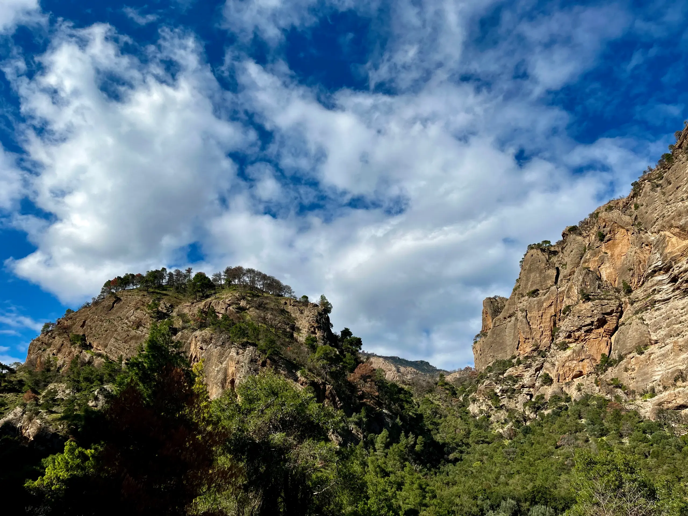

ΧΕΛΜΟΣ - ΒΟΥΡΑΪΚΟΣ ΠΑΓΚΟΣΜΙΟ ΓΕΩΠΑΡΚΟ UNESCOCHELMOS - VOURAIKOS UNESCO GLOBAL GEOPARK
Η Άγρια Ομορφιά του ΒουραϊκούThe Untamed Beauty of Vouraikos
Κλείσε θέση στον Οδοντωτό, σύγκρινε τη διαδρομή με το Ε4 και δες άμεσα πότε, από πού και με τι εξοπλισμό αξίζει να ξεκινήσεις.Book the Odontotos, compare it with the E4 trail, and see at a glance when to go, where to start, and what to bring.
Σαββατοκύριακα και αργίες οι θέσεις εξαντλούνται γρήγορα. Για πεζοπορία Ε4, έλεγξε καιρό και εξοπλισμό πριν ξεκινήσεις.Seats can sell out quickly on weekends and holidays. For the E4 hike, check weather and gear before you start.
Προγραμματισμός ΕπίσκεψηςVisit Planner
Οργάνωσε την επίσκεψή σου πριν μπεις στο φαράγγι Plan the visit before you step into the gorge
Κράτηση για Οδοντωτό, οδηγίες, σύγκριση Ε4 και τρένου, και γρήγορα tips για εποχή, αφετηρία και ασφάλεια. Odontotos booking, directions, route comparison, and quick tips on season, starting points, and safety.
Κλείσε θέση στον Οδοντωτό
Book the Odontotos
Οδηγίες για το φαράγγι
Get directions
Σύγκρινε πρώτα τις διαδρομές
Compare the routes first
Ιδανική ΠερίοδοςBest Window
Μάιος έως ΟκτώβριοςMay through October
Άνοιξη για νερά και καταρράκτες, φθινόπωρο για χρώμα και πιο ήπιες θερμοκρασίες.Spring for water flow and waterfalls, autumn for color and milder temperatures.
ΑφετηρίαStarting Points
Διακοπτό ή ΚαλάβρυταDiakopto or Kalavryta
Για τρένο ξεκίνα από Διακοπτό. Για πεζοπορία Ε4, πρακτικά σημεία είναι τα Καλάβρυτα και η Κάτω Ζαχλωρού.For the railway, start at Diakopto. For the E4 hike, Kalavryta and Kato Zachlorou are the most practical starting points.
ΕξοπλισμόςWhat to Bring
Νερό, παπούτσια, ελαφρύ jacketWater, hiking shoes, light jacket
Για το Ε4 υπολόγισε τουλάχιστον 2 λίτρα νερό και σταθερό κράτημα. Το φαράγγι αλλάζει θερμοκρασία γρήγορα.For the E4, plan for at least 2 liters of water and solid footwear. Gorge temperatures can shift quickly.
Τι Ταιριάζει Σε ΣέναBest Match
Θέαμα ή πλήρης διάσχισηScenic ride or full crossing
Ο Οδοντωτός είναι η εύκολη, οικογενειακή επιλογή. Το Ε4 είναι η σωστή διαδρομή για όσους θέλουν πλήρη επαφή με το τοπίο.The railway is the easy, family-friendly option. The E4 is the right choice if you want full contact with the landscape.
Γρήγορη σύγκριση εμπειριώνQuick route comparison
Δες καθαρά ποια επιλογή ταιριάζει στον χρόνο, την αντοχή και το είδος της επίσκεψης που θέλεις.See clearly which option fits your time, stamina, and the kind of visit you want.
Εύκολη ΕπιλογήEasy Option
ΟδοντωτόςOdontotos Railway
Ιδανικό για οικογένειες, φωτογραφία, σύντομη εκδρομή και πρώτη γνωριμία με το φαράγγι.Ideal for families, photography, short day trips, and a first encounter with the gorge.
- ΔιάρκειαDuration
- περίπου 1 ώραabout 1 hour
- ΑφετηρίαStart
- Diakopto
- Ιδανικό γιαBest for
- θέαμα και άνεσηscenery and comfort
- ΣημείωσηNote
- κράτηση νωρίςbook early
Πλήρης ΕμπειρίαFull Immersion
Μονοπάτι Ε4E4 Trail
Η σωστή επιλογή για όσους θέλουν να βιώσουν το ανάγλυφο, τα περάσματα και το οικοσύστημα με ρυθμό πεζοπορίας.The right option for visitors who want to experience the terrain, crossings, and ecosystem at hiking pace.
- ΔιάρκειαDuration
- 5 έως 6 ώρες5 to 6 hours
- ΑφετηρίαStart
- Καλάβρυτα / ΖαχλωρούKalavryta / Zachlorou
- Ιδανικό γιαBest for
- πεζοπόρουςhikers
- ΣημείωσηNote
- νερό και εξοπλισμόςwater and gear
Έλεγξε δρομολόγια, καιρό και φυσική κατάσταση πριν ξεκινήσεις. Το σωστό planning εδώ αλλάζει όλη την εμπειρία.Check schedules, weather, and fitness level before you start. Proper planning changes the entire experience here.
Φαράγγι του Βουραϊκού:Vouraikos Gorge:
Όταν το Νερό Σμιλεύει την Πέτρα When Water Sculpts Stone
Εδώ και αιώνες, ο Βουραϊκός σμιλεύει το ορεινό ανάγλυφο της Αχαΐας, δημιουργώντας το επιβλητικό ρήγμα των 20 χιλιομέτρων. Το τοπίο αυτό, με απόκρημνες ορθοπλαγιές, καταρράκτες και φυσικά σπήλαια, αποτελεί σήμερα προστατευόμενο τμήμα του Παγκόσμιου Γεωπάρκου UNESCO Χελμού-Βουραϊκού. For centuries, the Vouraikos River has shaped the mountainous terrain of Achaia, carving out this striking 20-kilometer gorge. With its steep rock faces, waterfalls, and natural caves, the landscape now forms a protected part of the UNESCO Chelmos-Vouraikos Global Geopark.
20 km
Συνολικό μήκος φαραγγιού Total gorge length
1896
Ιστορική σύνδεση με Οδοντωτό Historic railway connection
E4
Ευρωπαϊκό μονοπάτι πεζοπορίας European hiking trail


Το Φαράγγι The Gorge
Ανακαλύψτε το φαράγγι του Βουραϊκού με δύο τρόπους: με τον Οδοντωτό, μέσα από στενά περάσματα και σήραγγες, ή πεζοπορώντας στο ευρωπαϊκό μονοπάτι Ε4. Experience Vouraikos Gorge in two ways: ride the Odontotos through narrow passages and tunnels, or hike the European E4 trail through its heart.
Πρώτη Ματιά At a Glance
Τρένο ή μονοπάτι Train or trail
Δύο βασικοί τρόποι εξερεύνησης: ο Οδοντωτός και η πεζοπορία στο Ε4. Two core ways to explore: the Odontotos railway and the E4 hiking trail.
Τι Ξεχωρίζει What Stands Out
Ρήγμα, γέφυρες, σήραγγες Rift, bridges, tunnels
Ένα τοπίο 20 χιλιομέτρων με φυσικές σπηλαιομορφές και ιστορική σιδηροδρομική διαδρομή. A 20-kilometer landscape of natural cave formations and a historic mountain railway.
Εμπειρίες και Γεωλογικά Θαύματα Experiences and Geological Wonders Το όνομα του ποταμού, το ρήγμα των 20 χιλιομέτρων και η μοναδική συνύπαρξη πέτρας, νερού και σιδηροδρόμου. The river's name, the 20-kilometer rift, and the rare meeting of rock, water, and railway engineering.
Ο ποταμός που διατρέχει το φαράγγι πήρε το όνομά του από την αρχαία πόλη Βούρα. Όπως σημειώνει ο ιστορικός Γ. Παπανδρέου, το υδάτινο ρεύμα που διέσχιζε την επικράτειά της μέχρι τις ακτές της Αιγιάλειας ονομάστηκε Βουραϊκός. The river that crosses the gorge took its name from the ancient city of Voura. As historian G. Papandreou notes, the stream that flowed through its territory toward the coast of Aigialeia came to be known as Vouraikos.
Το επιβλητικό ρήγμα των 20 χιλιομέτρων συνθέτει ένα σπάνιο γεωλογικό τοπίο, όπου ο ιστορικός Οδοντωτός του 1896 διασχίζει 49 γέφυρες και σκοτεινές σήραγγες με φυσικούς σταλακτίτες. Για μια πλήρη ορεινή εμπειρία, μπορείτε είτε να επιβιβαστείτε στο τρένο είτε να ακολουθήσετε το μονοπάτι Ε4 δίπλα στο ορμητικό ποτάμι. This dramatic 20-kilometer rift forms a rare geological landscape, where the historic 1896 rack railway crosses 49 bridges and dark tunnels lined with natural stalactites. For a complete mountain experience, you can either board the train or follow the E4 trail beside the rushing river.
Ορεινή Πεζοπορία στο Ευρωπαϊκό Μονοπάτι Ε4 Mountain Hiking on the European E4 Trail Η διαδρομή δίπλα στις ράγες φέρνει τον πεζοπόρο κοντά στη χλωρίδα του Εθνικού Πάρκου και στο ετήσιο Πανελλήνιο Πέρασμα. A route beside the railway that brings hikers close to the National Park's flora and the annual Panhellenic Crossing.
Όσοι επιλέγουν άμεση επαφή με το τοπίο ακολουθούν το Ευρωπαϊκό μονοπάτι Ε4, παράλληλα με τις σιδηροδρομικές ράγες. Η πεζοπορία φέρνει τον επισκέπτη κοντά στη σπάνια ενδημική χλωρίδα και στη διαρκή εναλλαγή νερού, βράχου και βλάστησης. Those seeking direct contact with the landscape can follow the European E4 trail alongside the railway line. The route brings hikers close to the National Park's protected endemic flora, including the rock bellflower, wild hedge-nettle, and Morea alyssum.
Κάθε δεύτερη Κυριακή του Μαΐου, εκατοντάδες ορειβάτες συμμετέχουν στο οργανωμένο «Πανελλήνιο Πέρασμα» του φαραγγιού, υπό την αιγίδα του Συλλόγου Ορειβασίας και Χιονοδρομίας Καλαβρύτων. Every year, on the second Sunday of May, hundreds of hikers join the organized "Panhellenic Crossing" of the gorge under the auspices of the Kalavryta Mountaineering and Ski Club.
Ιστορικές Στάσεις Historical Stops Κάτω Ζαχλωρού, Μέγα Σπήλαιο και η παλαιά παράδοση του μαντείου του Ηρακλή στις όχθες του ποταμού. Kato Zachlorou, Mega Spilaio, and the old tradition of the oracle of Heracles on the riverbanks.
Στο 12ο χιλιόμετρο της διαδρομής, ο επισκέπτης φτάνει στην Κάτω Ζαχλωρού, σημείο εκκίνησης για την προσέγγιση της ιστορικής Μονής του Μεγάλου Σπηλαίου. Η περιοχή διατηρεί επίσης ζωντανή την αρχαία παράδοση του μαντείου του Ηρακλή στις όχθες του ποταμού. At kilometer 12, visitors reach Kato Zachlorou, the starting point for the historic Monastery of Mega Spilaio. The area also preserves the ancient tradition of the oracle of Heracles on the riverbanks, where pilgrims once sought answers through sacred tablets.
Ο Παυσανίας και η Αρχαιότερη Μαρτυρία Pausanias and the Earliest Recorded Testimony
Ο Παυσανίας, ο σημαντικότερος περιηγητής της αρχαιότητας, επισκέφθηκε την περιοχή και κατέγραψε με ακρίβεια το πέρασμα του ποταμού, το σπήλαιο του Ηρακλή και τον ιδιαίτερο τρόπο μαντείας που συνδεόταν με τον Βουραϊκό. Pausanias, antiquity's best-known travel writer, visited the area and recorded with remarkable precision the course of the river, the cave of Heracles, and the distinctive form of divination associated with Vouraikos.
Το Απόσπασμα του Παυσανία και η Ελεύθερη Απόδοση Pausanias Excerpt and Interpretive Rendering Το αρχαίο κείμενο και η σύγχρονη ανάγνωσή του, για όποιον θέλει να δει ολόκληρη τη μαρτυρία. The ancient text and its modern rendering, available for anyone who wants to read the full testimony.
Το Κείμενο του Παυσανία The Text of Pausanias
Αχαϊκά, 25.10
«καταβάντων δὲ ἐκ Βούρας ὡς ἐπὶ θάλασσαν ποταμός τε Βουραϊκὸς ὀνομαζόμενος καὶ Ἡρακλῆς οὐ μέγας ἐστὶν ἐν σπηλαίῳ: ἐπίκλησις μὲν καὶ τούτου Βουραϊκός, μαντείας δὲ ἐπὶ πίνακί τε καὶ ἀστραγάλοις ἔστι λαβεῖν. εὐξάμενος γὰρ πρὸ τοῦ ἀγάλματος ὁ μαντευόμενος, ἐπὶ τῇ εὐχῇ λαβὼν ἀστραγάλους — οἱ δὲ ἄφθονοι παρὰ τῷ Ἡρακλεῖ κεῖνται — τέσσαρας ἀφίησιν ἐπὶ τῆς τραπέζης: ἐπὶ δὲ παντὶ ἀστραγάλῳ σχήματά ἐστιν ἐπεξεργασμένα, τὰ δὲ σχήματα δηλοῖ τὸν ἐπὶ τῷ πίνακι γεγραμμένον ἐξήγησιν ἔχειν τῶν σχημάτων.»
Ελεύθερη Απόδοση Interpretive Rendering
Σύγχρονη ανάγνωση του αποσπάσματος A modern reading of the passage
«Καθώς κατεβαίνει κανείς από τη Βούρα προς τη θάλασσα, συναντά έναν ποταμό που ονομάζεται Βουραϊκός και ένα σπήλαιο όπου υπάρχει ένα άγαλμα του Ηρακλή, όχι πολύ μεγάλο. Και αυτός αποκαλείται Βουραϊκός. Εκεί μπορεί κανείς να πάρει χρησμό με τη βοήθεια ενός πίνακα και αστραγάλων. Όποιος θέλει να συμβουλευτεί το μαντείο, αφού προσευχηθεί μπροστά στο άγαλμα, παίρνει τέσσερις αστραγάλους από τους πολλούς που βρίσκονται εκεί και τους ρίχνει πάνω στο τραπέζι. Κάθε πλευρά του αστραγάλου έχει ένα σχήμα, και ο συνδυασμός των σχημάτων αντιστοιχεί σε μια εξήγηση που είναι γραμμένη πάνω στον πίνακα.» “As one descends from Voura toward the sea, one encounters a river called Vouraikos and a cave where there stands a not very large image of Heracles, also known as Vouraikos. There, an oracle may be obtained by means of a tablet and knucklebones. After praying before the image, the person seeking a response takes four knucklebones from the many kept there and casts them upon the table. Each side bears a figure, and the combination of those figures corresponds to an explanation written on the tablet.”
Ο Μύθος του Ηρακλή The Myth of Heracles
Η τοπική παράδοση που διασώζεται γύρω από την αρχαία Βούρα συνδέει το πέρασμα με τον Ηρακλή και δίνει στο φαράγγι μια μυθική, όχι μόνο γεωλογική, καταγωγή. Local tradition preserved around ancient Voura links the passage with Heracles, giving the gorge a mythic origin rather than a purely geological one.
Το Μαντείο The Oracle
Πρόκειται για ένα από τα πιο ιδιαίτερα μαντεία της αρχαιότητας, αφού ο χρησμός δεν δινόταν από ιερέα, αλλά από τον συνδυασμό των αστραγάλων και την ερμηνεία του πίνακα. It was one of the most unusual oracles of antiquity, since the answer did not come from a priest but from the cast of the knucklebones and the written interpretation on the tablet.
Ο Ερασίνος και ο Βουραϊκός Erasinos and Vouraikos
Η μαρτυρία του Παυσανία δείχνει ότι το ποτάμι συνδεόταν με διαφορετικές ονομασίες κατά μήκος της διαδρομής του, καθώς πλησίαζε την αρχαία πόλη και το ιερό τοπίο της Βούρας. Pausanias helps us understand that the river was associated with different names along its course, especially as it approached the ancient city and sacred landscape of Voura.
Περιηγητές του 19ου Αιώνα Nineteenth-Century Travellers
Δύο ιστορικές ματιές αποτυπώνουν το φαράγγι άλλοτε ως στρατηγικό πέρασμα και άλλοτε ως σκηνικό δέους, πολύ πριν γίνει σύγχρονος προορισμός εμπειρίας. Two historical perspectives portray the gorge either as a strategic passage or as a landscape of awe, long before it became a contemporary destination for nature travel.
William Martin Leake Η Στρατηγική και η Γεωμορφολογία Strategy and Geomorphology Δείτε το απόσπασμα View excerpt
Ο Άγγλος συνταγματάρχης και τοπογράφος, στο έργο του Travels in the Morea, προσεγγίζει το τοπίο με το μάτι του στρατιωτικού και του επιστήμονα. In Travels in the Morea, the English colonel and topographer approaches the landscape with the eye of both soldier and scientist.
«Η πορεία του ποταμού των Καλαβρύτων, του αρχαίου Ερασίνου, προς τη θάλασσα προσφέρει ένα από τα πιο θεαματικά και άγρια περάσματα στην Πελοπόννησο. Το ποτάμι εισέρχεται σε ένα βαθύ και στενό χάσμα, όπου οι κάθετοι βράχοι υψώνονται σε τρομακτικό ύψος πάνω από την κοίτη. Η γεωμορφολογία της περιοχής δεν είναι μόνο εντυπωσιακή, αλλά και στρατηγικά καθοριστική. Το πέρασμα αυτό αποτελεί τη φυσική και μοναδική δίοδο που συνδέει το οροπέδιο των Καλαβρύτων με τον Κορινθιακό κόλπο, καθιστώντας το μια θέση τεράστιας αμυντικής σημασίας, καθώς μια μικρή δύναμη θα μπορούσε εύκολα να ελέγξει την επικοινωνία μεταξύ της ενδοχώρας και των ακτών της Αχαΐας.» “The course of the river of Kalavryta, the ancient Erasinus, toward the sea offers one of the most spectacular and wild passages in the Peloponnese. The river enters a deep and narrow chasm, where vertical rocks rise to formidable heights above its bed. The geomorphology of the area is not only striking but also strategically decisive. This passage forms the natural and only route linking the plateau of Kalavryta with the Corinthian Gulf, making it a place of great defensive importance, since a small force could easily control communication between the interior and the coasts of Achaia.”
François Pouqueville Η Επιβλητική Φύση και το Δέος Monumental Nature and Awe Δείτε το απόσπασμα View excerpt
Ο Γάλλος πρόξενος και περιηγητής, στο Voyage de la Grèce, αποδίδει το φαράγγι με τον ρομαντικό τόνο της εποχής, δίνοντας έμφαση στις αισθήσεις. In Voyage de la Grèce, the French consul and traveller renders the gorge in the Romantic tone of his era, emphasizing feeling and atmosphere.
«Καθώς κατηφορίζει κανείς από τα Καλάβρυτα προς τη θάλασσα, το τοπίο μεταμορφώνεται σε ένα σκηνικό απαράμιλλης αγριότητας και ομορφιάς. Ο Βουραϊκός βυθίζεται με ορμή σε μια άβυσσο, όπου η βλάστηση είναι οργιώδης. Τεράστια πλατάνια ριζώνουν στις σχισμές των βράχων, ενώ ορμητικοί καταρράκτες πέφτουν από μεγάλα ύψη, γεμίζοντας την ατμόσφαιρα με τον ήχο του νερού που συνθλίβεται στις πέτρες. Είναι ένα από τα πιο επιβλητικά θεάματα της Πελοποννήσου, ένα μέρος όπου η φύση φαίνεται να έχει επιστρατεύσει όλη της τη δύναμη για να δημιουργήσει έναν λαβύρινθο από βράχια, νερά και δάση που προκαλούν στον ταξιδιώτη ένα μείγμα τρόμου και θαυμασμού.» “As one descends from Kalavryta toward the sea, the landscape transforms into a scene of unmatched wildness and beauty. The Vouraikos plunges with force into an abyss where vegetation grows in abundance. Huge plane trees take root in the fissures of the rocks, while rushing waterfalls fall from great heights, filling the air with the sound of water crashing onto stone. It is one of the most imposing spectacles in the Peloponnese, a place where nature seems to have summoned all its power to create a labyrinth of rocks, waters, and forests that fills the traveller with both terror and admiration.”
Στενά περάσματα, απόκρημνες πλαγιές και η αίσθηση ότι το τοπίο ανοίγει καρέ καρέ.
Narrow passages, steep slopes, and the sense of a landscape unfolding frame by frame.

Ο Οδοντωτός The Rack Railway
Η διαδρομή που ενώνει τον ποταμό με τις κορυφές The railway route from the river to the mountain summits
Η ιστορική γραμμή Διακοπτού - Καλαβρύτων, γνωστή ως Οδοντωτός, διασχίζει το φαράγγι με αργό, σχεδόν θεατρικό ρυθμό και αποκαλύπτει ένα από τα πιο εμβληματικά σιδηροδρομικά τοπία της Ευρώπης. The historic Diakofto - Kalavryta line, known as the Odontotos, crosses the gorge at a slow, almost theatrical pace, revealing one of Europe's most iconic railway landscapes.
Κάθε στροφή αλλάζει την κλίμακα της εμπειρίας: από στενά περάσματα και βραχώδεις τοίχους μέχρι ανοίγματα φωτός που αφήνουν το τοπίο να αναπνεύσει. Every turn shifts the scale of the experience, from narrow passages and rock walls to sudden openings of light that let the landscape breathe.
Πρώτη Ματιά At a Glance
Ιστορική διαδρομή Historic route
Η γραμμή Διακοπτού - Καλαβρύτων διασχίζει το φαράγγι με αργό, πανοραμικό ρυθμό. The Diakofto - Kalavryta line crosses the gorge at a slow, panoramic pace.
Τι Ξεχωρίζει What Stands Out
49 γέφυρες και σήραγγες 49 bridges and tunnels
Ένα από τα πιο ιδιαίτερα ορεινά σιδηροδρομικά περάσματα της Ευρώπης. One of Europe's most distinctive mountain railway crossings.
Η Ανάβαση με τον Οδοντωτό Σιδηρόδρομο The Ascent with the Odontotos Rack Railway Η βασική διαδρομή του Οδοντωτού, με φυσικούς σταλακτίτες, γέφυρες και στενά περάσματα μέσα στο φαράγγι. The core Odontotos journey, with natural stalactites, bridges, and narrow passages through the gorge.
Η εμβληματική εμπειρία του Βουραϊκού είναι η επιβίβαση στον ιστορικό Οδοντωτό. Σε μια διαδρομή 22 χιλιομέτρων από το Διακοπτό έως τα Καλάβρυτα, ο συρμός διασχίζει 49 γέφυρες και περνά μέσα από σκοτεινές σήραγγες, ενώ ανάμεσα στους σταθμούς Νιάματα και Τρικλιά εισχωρεί σε συμπαγή βράχο με φυσικούς σταλακτίτες. One of the defining Vouraikos experiences is boarding the historic Odontotos. Over 22 kilometers from Diakofto to Kalavryta, the train crosses 49 bridges and passes through dark tunnels, while between Niamata and Triklia it cuts through solid rock lined with natural stalactites.
Πρόταση Ημερήσιας Διαδρομής Suggested Daily Itinerary Ένα ολοκληρωμένο πρόγραμμα από το Διακοπτό έως τα Καλάβρυτα, με στάσεις, φαγητό και σωστό timing. A full-day route from Diakofto to Kalavryta, with stops, lunch ideas, and timing.
Μια ιδανική ημερήσια διαδρομή ξεκινά από το παραθαλάσσιο Διακοπτό και ολοκληρώνεται στα Καλάβρυτα, συνδυάζοντας φύση, ιστορία και εμβληματικές εικόνες του Βουραϊκού. An ideal day trip starts in coastal Diakofto and ends in Kalavryta, combining nature, history, and some of the most iconic views of Vouraikos.
Πάρτε το πρώτο πρωινό τρένο, γύρω στις 09:05, ώστε να έχετε όλη τη μέρα μπροστά σας. Τα εισιτήρια καλό είναι να κλείνονται ηλεκτρονικά αρκετές ημέρες πριν, καθώς η ζήτηση είναι μεγάλη. Η πρώτη διαδρομή, περίπου 45 λεπτών, περνά από σήραγγες λαξευμένες στον βράχο, γέφυρες πάνω από το ποτάμι και περάσματα δίπλα από καταρράκτες. Take the first morning train, around 09:05, so you have the full day ahead. Tickets should be booked online several days in advance, as demand is high. The first 45-minute ride passes through rock-cut tunnels, over river bridges, and beside waterfalls.
Γύρω στις 09:50 θα φτάσετε στην Κάτω Ζαχλωρού, έναν οικισμό μέσα στα πλατάνια. Από εκεί μπορείτε είτε να απολαύσετε καφέ δίπλα στις γραμμές είτε να επισκεφθείτε τη Μονή του Μεγάλου Σπηλαίου, με ταξί ή με ανηφορικό μονοπάτι περίπου 45 λεπτών. Around 09:50 you arrive in Kato Zachlorou, a village shaded by plane trees. From there, you can either enjoy a coffee by the tracks or visit the Monastery of Mega Spilaio, by taxi or via an uphill trail of about 45 minutes.
Περίπου στις 12:50 πάρτε το επόμενο τρένο προς τα Καλάβρυτα. Το σκέλος αυτό είναι πιο ομαλό και οδηγεί στο οροπέδιο, όπου λίγο μετά τις 13:15 σας υποδέχονται ο καθαρός βουνίσιος αέρας και η παραδοσιακή αρχιτεκτονική της πόλης. At about 12:50, take the next train to Kalavryta. This leg is gentler and climbs toward the plateau, where, shortly after 13:15, fresh mountain air and the town's traditional architecture set the tone for your arrival.
Το μεσημέρι ταιριάζει ιδανικά με στάση φαγητού στον κεντρικό πεζόδρομο. Τα Καλάβρυτα φημίζονται για τα κρέατα, τις πίτες και τα τυροκομικά τους, οπότε αξίζει να δοκιμάσετε παραδοσιακό μαγειρευτό ή την τοπική φορμαέλα με κρασί από την Αχαΐα. Midday is ideal for a lunch stop on the main pedestrian street. Kalavryta is known for its meats, pies, and dairy products, so it is worth trying a traditional slow-cooked dish or the local formaela cheese with wine from Achaia.
1896
Έτος λειτουργίας Year inaugurated
22 km
Σιδηροδρομική πορεία Railway route
49
Γέφυρες και περάσματα Bridges and crossings
«Στον Βουραϊκό, το τοπίο δεν περιγράφεται απλώς. Αποκαλύπτεται αργά, σαν σκηνή από ντοκιμαντέρ που φωτίζεται από το νερό και την πέτρα.» "In Vouraikos, the landscape is not simply described. It is revealed slowly, like a documentary scene lit by water and stone."
Γεωπάρκο UNESCO UNESCO Geopark
Μια προστατευόμενη γεωλογική και πολιτιστική ενότητα διεθνούς σημασίας A protected geological and cultural landscape of international significance
Το Γεωπάρκο Χελμού - Βουραϊκού ανήκει στο Δίκτυο Παγκόσμιων Γεωπάρκων της UNESCO και αναγνωρίζεται για τη μοναδική γεωμορφολογία, τη βιοποικιλότητα και τη σύνδεσή του με την τοπική μνήμη και παράδοση. The Chelmos - Vouraikos Geopark is part of the UNESCO Global Geoparks Network and is recognized for its distinctive geomorphology, biodiversity, and ties to local memory and tradition.
Η εμπειρία του επισκέπτη δεν είναι απλώς θέαση, αλλά ανάγνωση στρωμάτων χρόνου, φυσικών μεταβολών και ανθρώπινων ιστοριών που συνυπάρχουν στο ίδιο τοπίο. The visit is more than a scenic experience. It is an encounter with layers of time, natural change, and human history embedded in the same landscape.
Πρώτη Ματιά At a Glance
UNESCO και Εθνικό Πάρκο UNESCO and National Park
Ένα προστατευόμενο τοπίο διεθνούς σημασίας, με γεωλογία, βιοποικιλότητα και τοπική μνήμη. A protected landscape of international significance, shaped by geology, biodiversity, and local memory.
Τι Ξεχωρίζει What Stands Out
Τοπίο, ζωή, σπήλαια Landscape, wildlife, caves
Απόκρημνα περάσματα, ενδημικά είδη και σπήλαια που συνδέουν φύση και παράδοση. Steep terrain, endemic species, and caves that connect nature with local tradition.
Γεωγραφικά και Γεωλογικά Στοιχεία Geographical and Geological Features Οι πηγές του ποταμού, το μήκος του φαραγγιού και η γεωλογική διαμόρφωση του προστατευόμενου τοπίου. The river's headwaters, the length of the gorge, and the geological formation of the protected landscape.
Τα νερά του Βουραϊκού πηγάζουν από τις δυτικές παρυφές του Χελμού και τις ανατολικές πλαγιές του Καλλιφωνίου. Ο ποταμός διανύει συνολικά 37,5 έως 40 χιλιόμετρα πριν εκβάλει στον Κορινθιακό κόλπο, κοντά στο Διακοπτό, ενώ το πιο εντυπωσιακό τμήμα του είναι το φαράγγι μήκους περίπου 20 χιλιομέτρων. The waters of Vouraikos rise on the western foothills of Chelmos and the eastern slopes of Kallifoni. The river runs for 37.5 to 40 kilometers before emptying into the Corinthian Gulf near Diakofto, while its most striking section is the gorge, stretching for roughly 20 kilometers.
Κατά τη διάρκεια χιλιετιών, η ορμή του νερού σμίλεψε το ανάγλυφο, δημιουργώντας απόκρημνα βράχια, φυσικές σπηλιές και καταρράκτες. Από το 2009, το φαράγγι και ο ευρύτερος ορεινός όγκος του Χελμού προστατεύονται ως Εθνικό Πάρκο Χελμού-Βουραϊκού. Over millennia, the force of the water shaped the landscape, creating steep cliffs, natural caves, and waterfalls. Since 2009, the gorge and the wider Chelmos massif have been protected as the Chelmos-Vouraikos National Park.
Χλωρίδα και Πανίδα: Ένα Ζωντανό Οικοσύστημα Flora and Fauna: A Living Ecosystem Σπάνια ενδημικά φυτά και άγρια πανίδα που διατηρούν την οικολογική ισορροπία του Εθνικού Πάρκου. Rare endemic plants and wildlife that sustain the National Park's ecological balance.
Το οικοσύστημα μέσα και γύρω από το φαράγγι έχει ιδιαίτερο επιστημονικό ενδιαφέρον. Η χλωρίδα της περιοχής φιλοξενεί σπάνια και προστατευόμενα ενδημικά είδη, όπως η καμπανούλα των βράχων, ο άγριος στάχυς και η αουρίνια του Μωριά. The ecosystem in and around the gorge is of major scientific interest. Its flora includes rare and protected endemic species such as the rock bellflower, wild hedge-nettle, and Morea alyssum.
Παράλληλα, η άγρια πανίδα βρίσκει καταφύγιο στην πυκνή βλάστηση και στους απότομους δασωμένους όγκους γύρω από τον ποταμό, διατηρώντας την περιβαλλοντική ισορροπία του Εθνικού Πάρκου. Wildlife finds refuge in the dense vegetation and steep forested slopes around the river, helping maintain the ecological balance of the National Park.
Εξερεύνηση Σπηλαίων Cave Exploration Το σπήλαιο του Ηρακλή και το Σπήλαιο Λιμνών συνδέουν μύθο, ξενάγηση και εντυπωσιακές σταλακτιτικές μορφές. The cave of Heracles and the Cave of the Lakes connect myth, guided visits, and striking stalactite formations.
Η περιοχή έχει έντονο ενδιαφέρον για εξερεύνηση σπηλαίων. Στις όχθες του Βουραϊκού εντοπίζεται το σπήλαιο που συνδέεται με την αρχαία παράδοση του Ηρακλή, ενώ το Σπήλαιο Λιμνών προσφέρει οργανωμένη ξενάγηση 40 λεπτών με 13 διαδοχικές λίμνες και εντυπωσιακούς σταλακτιτικούς σχηματισμούς. The area is especially rewarding for cave exploration. On the banks of the Vouraikos lies the cave linked to the ancient tradition of the oracle of Heracles, while the Cave of the Lakes offers a 40-minute guided tour through 13 successive lakes and impressive stalactite formations.
Οι Καταρράκτες στο Φαράγγι Waterfalls in the Gorge Ορμητικά νερά δίπλα στο Ε4 και μικρές παρακάμψεις προς δροσερούς καταρράκτες εκτός της βασικής γραμμής. Forceful waters beside the E4 and short detours to refreshing waterfalls beyond the main route.
Η Δύναμη του Νερού The Power of Water
Ορμητικά Νερά Δίπλα στις Ράγες
Κατά την πεζοπορία στο μονοπάτι Ε4, το νερό καθορίζει τον ρυθμό της πορείας. Ο ποταμός και οι ορμητικοί καταρράκτες συνοδεύουν τα βήματα του πεζοπόρου, διαμορφώνοντας ένα δυναμικό τοπίο ανάμεσα σε βράχια, σπήλαια και πυκνή βλάστηση.
Rushing Waters Beside the Rails
Along the E4 trail, water sets the pace of the route. The river and its forceful cascades accompany hikers through a dynamic landscape of rock, caves, and dense vegetation.
Παρακάμψεις Δροσιάς: Μεσορρούργι και Περιθώρι
Η υδάτινη εμπειρία συνεχίζεται και έξω από τον άξονα της γραμμής. Ο καταρράκτης του Μεσορρουργίου, με πτώση περίπου τεσσάρων μέτρων, και ο κοντινός καταρράκτης του Περιθωρίου προσφέρουν δύο δροσερές παρακάμψεις που απαιτούν σωστή οργάνωση και δεύτερο ζευγάρι παπούτσια για τα βρεγμένα εδάφη.
Cool Detours: Mesorrourgi and Perithori
The water-shaped landscape extends beyond the railway itself. Mesorrourgi waterfall, with a drop of about four meters, and the nearby Perithori waterfall offer two refreshing detours that require good planning and a second pair of shoes for wet ground.

Σύμφωνα με την επίσημη σελίδα της UNESCO, το Chelmos-Vouraikos είναι ενταγμένο στο Παγκόσμιο Δίκτυο Γεωπάρκων της UNESCO. According to UNESCO's official page, Chelmos-Vouraikos is part of the UNESCO Global Geoparks Network.
Επίσημη Σελίδα UNESCOOfficial UNESCO Page
Εκεί όπου η βλάστηση συναντά την πέτρα, η διαδρομή αποκτά κλίμακα και σιωπή.
Where vegetation meets stone, the route takes on scale and silence.
Χάραξε τη Διαδρομή σου Chart Your Path
Κύρια ΔιαδρομήCore Route
Ε4E4
Ευρωπαϊκό μονοπάτι πεζοπορίαςEuropean hiking trail
Η κλασική πεζοπορική γραμμή που ακολουθεί τη χαράδρα και συνδέει το φυσικό ανάγλυφο με τον ιστορικό Οδοντωτό.The classic hiking route that follows the gorge and connects the natural landscape with the historic rack railway.
Δείτε λεπτομέρειες View details
Απαιτητική ΠορείαChallenge Route
Η ΑνάβασηThe Ascent
ΔύσκοληDifficultΑπό το Διακοπτό προς τα Καλάβρυτα, η πορεία των 22 χιλιομέτρων κινείται κόντρα στη ροή του Βουραϊκού, πάνω ή δίπλα στις ράγες του Οδοντωτού, με έντονες κλίσεις έως 17,5% και καθαρά ορειβατικό χαρακτήρα.From Diakopto to Kalavryta, this 22 km route climbs against the course of the Vouraikos, on or beside the rack railway tracks, with gradients of up to 17.5% and a serious mountaineering character.
Δείτε λεπτομέρειες View details
Κλασική ΔιάσχισηClassic Crossing
Η ΚατάβασηThe Descent
ΜέτριαModerateΑπό Καλάβρυτα ή Κάτω Ζαχλωρού προς Διακοπτό, η κατάβαση ακολουθεί το Ε4 πάνω ή δίπλα στις ράγες του Οδοντωτού, με διαρκώς εναλλασσόμενο τοπίο, γέφυρες, σήραγγες και απαιτητικό πετρώδες έδαφος.From Kalavryta or Kato Zachlorou to Diakopto, the descent follows the E4 on or beside the rack railway tracks, through constantly changing scenery with bridges, tunnels, and demanding rocky terrain.
Δείτε λεπτομέρειες View details
Σύντομη ΠαράκαμψηScenic Detour
Κρυφοί ΚαταρράκτεςHidden Falls
ΜέτριαModerateΜια ήπια κατάβαση προς τους πιο φωτογραφημένους καταρράκτες του ποταμού, ιδανική για όσους θέλουν να συνδυάσουν περπάτημα και φωτογραφία. Στον καταρράκτη του Μεσορρουργίου τα νερά πέφτουν από ύψος 4 μέτρων, ενώ αξίζει να δείτε και τον γειτονικό καταρράκτη του Περιθωρίου.A gentle descent to the river's most photographed waterfalls, ideal for those who want to combine walking with dramatic photo stops. At Mesorrourgi, water drops from a height of four meters, while the nearby Perithori waterfall is equally worth the detour.
Δείτε λεπτομέρειες View detailsΟδηγός ΠεζοπορίαςHiking Guide
Πρώτη Ματιά At a Glance
Ε4 και βασικές επιλογές E4 and key options
Πλήρης διάσχιση, μικρότερες αφετηρίες και καθαρή διάκριση ανάμεσα σε κατάβαση και ανάβαση. Full crossing, shorter starting points, and a clear distinction between descent and ascent.
Τι Ξεχωρίζει What Stands Out
Ασφάλεια και εξοπλισμός Safety and gear
Χρήσιμες οδηγίες για δρομολόγια τρένου, εποχή, ένταση διαδρομής και βασικό εξοπλισμό. Useful guidance on train schedules, season, route intensity, and essential equipment.
Ε4: Μήκος, Αφετηρίες και Δυσκολία E4: Length, Starting Points, and Difficulty Συνολικό μήκος, κύριες αφετηρίες και βαθμός δυσκολίας για όποιον σχεδιάζει τη βασική διάσχιση. Total distance, main starting points, and difficulty level for planning the main crossing.
Το Ευρωπαϊκό Μονοπάτι Ε4 ακολουθεί το φαράγγι του Βουραϊκού μέσα στο Εθνικό Πάρκο και το Παγκόσμιο Γεωπάρκο UNESCO Χελμού-Βουραϊκού, σε παράλληλη πορεία με τις ράγες του ιστορικού Οδοντωτού. The European E4 trail follows Vouraikos Gorge through the Chelmos-Vouraikos National Park and UNESCO Global Geopark, running parallel to the tracks of the historic rack railway.
- Πλήρης διάσχιση: Καλάβρυτα - Διακοπτό, 22 χλμ., περίπου 5 - 6 ώρες.Full crossing: Kalavryta to Diakopto, 22 km, around 5 - 6 hours.
- Βαθμός δυσκολίας: Χαμηλή προς μέτρια, με κυρίως κατηφορική κλίση αλλά απαιτητικό, πετρώδες έδαφος.Difficulty: Low to moderate, mostly downhill, but on demanding rocky terrain.
- Αφετηρίες: Από Κάτω Ζαχλωρού η πορεία πέφτει στα 13 - 15 χλμ., ενώ υπάρχει και πιο σύντομη επιλογή περίπου 10 χλμ. έως Νιάματα.Starting points: From Kato Zachlorou, the route drops to 13 - 15 km, and there is also a shorter option of about 10 km to Niamata.
Σημεία-Κλειδιά της Διαδρομής Route Highlights Γέφυρες, σήραγγες, βραχώδη περάσματα, μοναστήρι και οικοσύστημα σε μια γρήγορη επισκόπηση. Bridges, tunnels, rock passages, monastery, and ecosystem details in one quick overview.
- Γέφυρες και σήραγγες: Θα περάσετε από 49 πέτρινες και μεταλλικές γέφυρες και από λαξευμένες σήραγγες του τέλους του 19ου αιώνα.Bridges and tunnels: You pass 49 stone and metal bridges, along with carved tunnels from the late 19th century.
- Βραχώδη περάσματα: Στο τμήμα Νιάματα - Τρικλιά εμφανίζονται τα πιο εντυπωσιακά περάσματα με φυσικές σπηλαιομορφές.Rock passages: The Niamata - Triklia stretch includes the most dramatic passages with natural cave formations.
- Μοναστήρι και παράδοση: Από τη Ζαχλωρού γίνεται παράκαμψη προς τη Μονή Μεγάλου Σπηλαίου, ενώ η περιοχή συνδέεται και με τον μύθο του Ηρακλή.Monastery and tradition: From Zachlorou, you can detour to Mega Spilaio Monastery, while the area is also tied to the myth of Heracles.
- Χλωρίδα και πανίδα: Στο οικοσύστημα του φαραγγιού συναντώνται σπάνια φυτά και χαρακτηριστικά είδη της άγριας ζωής, από ενδημική χλωρίδα έως υδρόβια πανίδα.Flora and fauna: The gorge ecosystem includes rare plants and species such as the rock bellflower and the otter.
Κατάβαση: Tips, Ασφάλεια και Βασικός Εξοπλισμός Downhill Route: Tips, Safety, and Essential Gear Πρακτικές οδηγίες για ασφαλέστερη κατάβαση, σωστό timing και εξοπλισμό που πραγματικά χρειάζεται. Practical advice for a safer descent, better timing, and the gear that really matters.
- Επιλέξτε κατάβαση: Ξεκινήστε από Καλάβρυτα ή Ζαχλωρού προς Διακοπτό, γιατί η ανάβαση είναι πολύ πιο απαιτητική.Choose downhill: Start from Kalavryta or Zachlorou to Diakopto for a more manageable effort.
- Ελέγξτε τα δρομολόγια: Περπατάτε στις ράγες, άρα μελετήστε ώρες Οδοντωτού, ειδικά για σήραγγες και γέφυρες.Check train schedules: You are walking on rail infrastructure, so timing is critical near bridges and tunnels.
- Χρησιμοποιήστε μπατόν: Μειώνουν την καταπόνηση στα γόνατα και αυξάνουν το αίσθημα ασφάλειας.Use trekking poles: They reduce knee strain and improve balance and confidence.
- Επιστροφή και εποχή: Κλείστε εγκαίρως τα εισιτήρια επιστροφής και προτιμήστε άνοιξη, ειδικά γύρω από το Πανελλήνιο Πέρασμα.Return and season: Book return tickets early and aim for spring, especially around the Panhellenic Crossing.
- Παπούτσια και ρούχα: Φορέστε ελαφριά ρούχα που στεγνώνουν γρήγορα και παπούτσια ή μποτάκια με στήριξη αστραγάλου.Footwear and clothing: Wear light, quick-drying clothes and shoes or boots with ankle support.
- Ήλιος, νερό, πρόγνωση: Έχετε καπέλο, γυαλιά, αντηλιακό, νερό ή ισοτονικό, ελαφρύ γεύμα και ένα αδιάβροχο στρώμα αν χρειάζεται.Sun, water, weather: Carry a hat, sunglasses, sunscreen, water or an isotonic drink, a light meal, and a waterproof layer if needed.
Ανάβαση: Πρόκληση, Προετοιμασία και Εξοπλισμός Ascent: Challenge, Preparation, and Gear Η πιο απαιτητική εκδοχή της διαδρομής, με έμφαση στη φυσική κατάσταση, την έκθεση και την προετοιμασία. The most demanding version of the route, with emphasis on fitness, exposure, and preparation.
Η ανάβαση από Διακοπτό προς Καλάβρυτα είναι η πιο απαιτητική επιλογή της διαδρομής. Κινείται κόντρα στη ροή του ποταμού, με συνεχή ανηφορική κλίση έως 17,5%, και έχει καθαρά ορειβατικό χαρακτήρα. The ascent from Diakopto to Kalavryta is the most demanding option on the route. It climbs against the river's course, with continuous gradients of up to 17.5%, and has a distinctly mountaineering character.
Συνιστάται μόνο σε πεζοπόρους με πολύ καλή φυσική κατάσταση. Αν υπάρχει χαμηλή αντοχή ή θέμα υγείας, καλύτερα να επιλεγεί συντομότερη ή κατηφορική εκδοχή. It is recommended only for hikers with very good fitness. If stamina is limited or there is any health concern, a shorter or downhill option is the safer choice.
- Παπούτσια: Ελαφριά ορειβατικά μποτάκια, καλά δεμένα, με έμφαση στη στήριξη αστραγάλου.Footwear: Lightweight hiking boots with firm ankle support.
- Ρουχισμός: Τεχνικά υφάσματα που αναπνέουν και στεγνώνουν γρήγορα.Clothing: Breathable, quick-drying technical layers.
- Ενυδάτωση και ενέργεια: Νερό ή ισοτονικό και συχνά, ελαφριά σνακ είναι απαραίτητα.Hydration and fuel: Water or electrolytes, plus frequent light snacks, are essential.
- Προστασία από ήλιο: Μεγάλο μέρος της πορείας είναι εκτεθειμένο, άρα χρειάζεται καπέλο, αντηλιακό και σωστή διαχείριση ρυθμού.Sun protection: Much of the route is exposed, so a hat, sunscreen, and a controlled pace are important.
- Μερική ανάβαση: Πιο ασφαλής εναλλακτική είναι το τμήμα Νιάματα - Κάτω Ζαχλωρού, περίπου 10 χλμ. σε 2 ώρες.Partial ascent: A safer alternative is the Niamata - Kato Zachlorou section, about 10 km in 2 hours.
Η Εμπειρία της ΠεζοπορίαςThe Hiking Experience
Πρώτη Ματιά At a Glance
Τρεις αναγνώσεις της διαδρομής Three ways to read the route
Η εμπειρία ξεδιπλώνεται ως κατάβαση, ανάβαση και συνολική αίσθηση του μονοπατιού Ε4. The route unfolds as descent, ascent, and the overall experience of the E4 trail.
Τι Ξεχωρίζει What Stands Out
Ρυθμός, έδαφος, φύση Rhythm, terrain, nature
Το νερό, οι γέφυρες, τα περάσματα και η αίσθηση του βουνού αλλάζουν ανάλογα με την κατεύθυνση. Water, bridges, passages, and the mountain atmosphere shift depending on the direction you choose.
Η Κατάβαση The Downhill Crossing Experience Η πιο προσιτή κατεύθυνση της διάσχισης, με γέφυρες, σήραγγες και συνεχή επαφή με τον ποταμό. The more accessible direction of the crossing, with bridges, tunnels, and constant contact with the river.
Η κατάβαση ξεκινά από τον σταθμό των Καλαβρύτων ή το γραφικό χωριό της Κάτω Ζαχλωρούς, ακολουθώντας τα χνάρια του Ευρωπαϊκού μονοπατιού Ε4. Καθώς περπατάτε, το τοπίο αλλάζει γρήγορα μορφή. Ο περιπατητής κινείται διαρκώς πάνω ή ακριβώς δίπλα στις στενές ράγες των 750 χιλιοστών του Οδοντωτού σιδηροδρόμου. Το έδαφος παραμένει ανώμαλο, γεμάτο πέτρες και σκληρό χαλίκι, απαιτώντας σταθερό βήμα με ανθεκτικά ορειβατικά παπούτσια. The descent begins at Kalavryta station or in the scenic village of Kato Zachlorou, following the course of the European E4 trail. As you walk, the landscape shifts quickly. Hikers move constantly on or just beside the narrow 750 mm rails of the Odontotos railway. The ground stays uneven, with stones and coarse gravel, so stable footing and durable hiking shoes are essential.
Πάνω από 49 Γέφυρες
Ο ορμητικός Βουραϊκός οδηγεί την πορεία σας. Στη διάρκεια της πλήρους διάσχισης περνάτε πάνω από 49 πέτρινες και μεταλλικές γέφυρες, ενώ το βουητό του νερού συναντά τον χαρακτηριστικό ήχο του τρένου. Όταν ο συρμός πλησιάζει, οι πεζοπόροι παραμερίζουν στα ειδικά πλατώματα ή στην άκρη της γραμμής.
Across 49 Bridges
The Vouraikos sets the rhythm of the route. During the full crossing, you pass over 49 stone and metal bridges, while the sound of the water meets the unmistakable approach of the train. When the train draws near, hikers step aside onto designated platforms or clear ground beside the line.
Μέσα στα Σπλάχνα του Βράχου
Τα πιο επιβλητικά τμήματα της διαδρομής αποκαλύπτονται καθώς προχωράτε προς τον σταθμό Νιάματα. Ειδικά στο τμήμα μεταξύ Τρικλιάς και Νιαμάτων, το μονοπάτι εισχωρεί κυριολεκτικά στα σπλάχνα του βουνού. Περπατάτε μέσα σε σκοτεινές, λαξευμένες σήραγγες, όπου φυσικοί σταλακτίτες κρέμονται ακριβώς πάνω από τις σιδηροδρομικές γραμμές.
Inside the Mountain
The most dramatic sections appear as you approach Niamata station. Between Triklia and Niamata in particular, the trail seems to enter the mountain itself. You walk through dark, carved tunnels where natural stalactites hang directly above the railway tracks.
Στα κάθετα τοιχώματα του φαραγγιού, ο προσεκτικός παρατηρητής εντοπίζει σπάνια ενδημικά είδη της Πελοποννήσου, όπως την προστατευόμενη καμπανούλα των βράχων (Campanula rupestris). Κάτω στα νερά, ανάμεσα στους βατράχους και τα νερόφιδα, ίσως διακρίνετε κάποια βίδρα ή πέστροφες να κολυμπούν στις σκιερές βάθρες του ποταμού. On the vertical walls of the gorge, attentive walkers may spot rare endemic species of the Peloponnese, including the protected rock bellflower (Campanula rupestris). In the waters below, among frogs and water snakes, you might also glimpse otters or trout in the river's shaded pools.
Ο Τερματισμός στο Διακοπτό
Η συνεχής κατηφορική κλίση, η οποία φτάνει το 17,5% στα πιο απότομα σημεία, διευκολύνει την αναπνοή αλλά καταπονεί σταδιακά τα γόνατα. Για αυτόν τον λόγο, τα ορειβατικά μπατόν προσφέρουν σημαντική βοήθεια. Καθώς τα χιλιόμετρα λιγοστεύουν, η στενή βραχώδης χαράδρα ανοίγει. Η πυκνή ορεινή βλάστηση δίνει τη θέση της στον ανοιχτό ορίζοντα, μέχρι να εμφανιστούν τα πρώτα κτίρια του Διακοπτού και η δροσερή αύρα του Κορινθιακού κόλπου να σημάνει το τέλος της οδοιπορίας.
Finishing in Diakopto
The constant downhill gradient, reaching 17.5% at its steepest, makes breathing easier but gradually strains the knees. Trekking poles offer valuable support. As the kilometers pass, the narrow rocky ravine opens out. Dense mountain vegetation gives way to a wider horizon, until the first buildings of Diakopto appear and the cool breeze from the Corinthian Gulf signals the end of the hike.
Η Ανάβαση The Ascent Η πιο σκληρή εκδοχή του μονοπατιού, με συνεχή ανηφόρα, ένταση και αίσθηση ορειβατικής δοκιμασίας. The toughest version of the trail, with continuous climbing, intensity, and a true mountaineering feel.
Η πορεία ξεκινά από το Διακοπτό και κινείται κόντρα στη ροή του Βουραϊκού. Σε αντίθεση με την πιο ξεκούραστη κατάβαση, η ανηφορική διάσχιση των 22 χιλιομέτρων έως τα Καλάβρυτα αποτελεί σοβαρή σωματική πρόκληση που απαιτεί αντοχή και εξαιρετική φυσική κατάσταση. The route starts from Diakopto and moves against the flow of the Vouraikos. Unlike the easier downhill crossing, the uphill 22 km route to Kalavryta is a serious physical challenge that requires endurance and strong fitness.
Σκαρφαλώνοντας στις Ράγες του Οδοντωτού
Καθώς προχωράτε στη χαράδρα, το έδαφος παραμένει σκληρό, γεμάτο χαλίκι και πέτρες. Η διαδρομή κινείται διαρκώς πάνω ή δίπλα στις στενές ράγες των 750 χιλιοστών, και στις πιο απότομες κλίσεις γίνεται απόλυτα κατανοητό γιατί ο ιστορικός συρμός του 1896 χρειάζεται τα ειδικά του γρανάζια για να ανέβει.
Climbing Along the Rack Railway
As you move through the gorge, the ground stays rough, full of gravel and stones. The route runs constantly on or beside the narrow 750 mm tracks, and on the steepest gradients it becomes clear why the historic 1896 train needs its rack gears to climb.
Σήραγγες με Σταλακτίτες και Σπάνια Φύση
Η συνεχής ανηφόρα αντισταθμίζεται από τη γεωλογική ομορφιά του Εθνικού Πάρκου. Ανάμεσα σε Νιάματα και Τρικλιά, περνάτε μέσα από σκοτεινές σήραγγες με φυσικούς σταλακτίτες, ενώ στα γύρω βράχια επιβιώνουν σπάνια φυτά όπως η καμπανούλα των βράχων και η αουρίνια του Μωριά.
Tunnels, Stalactites, and Rare Nature
The strain of the climb is balanced by the geological beauty of the National Park. Between Niamata and Triklia, you pass through dark tunnels with natural stalactites, while rare plants such as the rock bellflower and Morea alyssum survive on the surrounding cliffs.
Η Λύτρωση στα 735 Μέτρα
Στο 12ο χιλιόμετρο η στενωπός ανοίγει προσωρινά κοντά στην Κάτω Ζαχλωρού, όμως η δοκιμασία συνεχίζεται έως την Κερπινή. Ύστερα από 5 έως 6 ώρες προσπάθειας, η είσοδος στα Καλάβρυτα, στα 735 μέτρα, σηματοδοτεί τον τερματισμό και την ικανοποίηση της δυσκολότερης κατεύθυνσης του μονοπατιού.
Relief at 735 Meters
At the 12th kilometer, the gorge briefly opens near Kato Zachlorou, but the effort continues toward Kerpini. After 5 to 6 hours of hard hiking, arrival in Kalavryta at 735 meters marks the finish and the satisfaction of completing the trail's hardest direction.
Η Εμπειρία του Μονοπατιού Ε4 The E4 Trail Experience Μια συνολική ανάγνωση του μονοπατιού μέσα από γεωλογία, οικοσύστημα και ιστορικά ίχνη. A broader reading of the trail through geology, ecosystem, and historical traces.
Πώς Αποκαλύπτεται το Μονοπάτι Ε4 How the E4 Trail Unfolds
Γεωλογικά Θαύματα και Μηχανικά Έργα του 19ου Αιώνα
Η διάσχιση του Ε4 φέρνει τον πεζοπόρο δίπλα σε βραχώδεις σχηματισμούς, καταρράκτες και επιβλητικές ορθοπλαγιές. Περπατώντας πλάι στις στενές ράγες, διασχίζετε 49 γέφυρες, ενώ στο τμήμα Νιάματα - Τρικλιά η γραμμή μπαίνει σε σκοτεινές σήραγγες με φυσικούς σταλαγμίτες και σταλακτίτες.
Geological Wonders and 19th-Century Engineering
Crossing the E4 places hikers beside dramatic rock formations, waterfalls, and imposing cliff walls. Walking along the narrow tracks, you cross 49 bridges, while on the Niamata - Triklia section the line enters dark tunnels with natural stalagmites and stalactites.
Σπάνια Χλωρίδα και Άγρια Πανίδα του Εθνικού Πάρκου
Στα κάθετα τοιχώματα του φαραγγιού φύονται ενδημικά φυτά με επιστημονική αξία, όπως η καμπανούλα των βράχων, η αουρίνια του Μωριά και ο άγριος στάχυς. Στα νερά και στον ουρανό της περιοχής μπορεί κανείς να συναντήσει από πέστροφες και βίδρες έως εντυπωσιακά αρπακτικά πτηνά.
Rare Flora and Wildlife of the National Park
The gorge walls host endemic plants of high scientific value, including the rock bellflower, Morea alyssum, and wild hedge-nettle. In the waters and skies of the area, visitors may encounter everything from trout and otters to impressive birds of prey.
Μυθολογικά Σπήλαια και Ιστορικά Μοναστήρια
Η τοπική παράδοση προσθέτει μια μυθολογική διάσταση στη διαδρομή, με το σπήλαιο του μαντείου του Ηρακλή στις όχθες του ποταμού. Στο 12ο χιλιόμετρο, ο σταθμός της Κάτω Ζαχλωρούς προσφέρει άμεση πρόσβαση και στη Μονή του Μεγάλου Σπηλαίου, έναν από τους σημαντικότερους θρησκευτικούς χώρους της Αχαΐας.
Mythic Caves and Historic Monasteries
Local tradition adds a mythic layer to the route, with the cave of the oracle of Heracles on the riverbanks. At kilometer 12, Kato Zachlorou station also provides direct access to the Monastery of Mega Spilaio, one of Achaia's most important religious sites.
Χάρτης Φαραγγιού Βουραϊκού Vouraikos Gorge Map
Διαδραστικός χάρτης της περιοχής του φαραγγιού με πραγματικά γεωγραφικά δεδομένα. Interactive map of the gorge area based on real geographic data.
Βασικές Πληροφορίες Essential Information
Καιρός & ΕποχήWeather & Season
Η καλύτερη περίοδος επίσκεψης είναι από τον Μάιο έως τον Οκτώβριο. Το φθινόπωρο χαρίζει έντονα χρώματα, ενώ την άνοιξη οι καταρράκτες είναι πιο εντυπωσιακοί λόγω του λιωμένου χιονιού.The best time to visit is from May to October. Autumn brings vivid foliage, while spring showcases powerful waterfalls fed by snowmelt.
ΠρόσβασηGetting There
Ο Οδοντωτός αναχωρεί τακτικά από το Διακοπτό. Στην περίοδο αιχμής συνιστάται κράτηση εισιτηρίων τουλάχιστον 48 ώρες νωρίτερα.Trains depart regularly from Diakopto. During peak season, tickets should be booked at least 48 hours in advance.
Ασφάλεια ΠρώταSafety First
Αν κινείστε κοντά στις ράγες, ελέγχετε πάντα τα δρομολόγια του τρένου. Απαραίτητα είναι τα κατάλληλα ορειβατικά παπούτσια και τουλάχιστον 2 λίτρα νερό, ειδικά τους θερμότερους μήνες.Always check the train schedule if walking on or near the tracks. Proper hiking boots and at least 2 liters of water are essential, especially in the warmer months.

ΣυντεταγμένεςCoordinates
38.2039° N, 22.1891° E